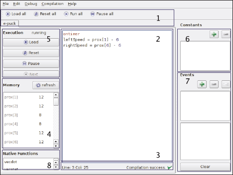

Un survol de Studio
Stéphane Magnenat
Voir aussi: Le langage d'Aseba
Aseba Studio est un environnement de développement intégré dans lequel nous éditons et debugons les scripts pour tous
les noeuds d'un réseau aseba.
Fonctionnalités

- Édition concurrente (1).
Chaque noeud possède son propre onglet avec son script, le contenu de sa mémoire, son statut d'exécution et ses commandes de debug.
De plus, une barre fournit des commandes générales de debug qui affectent tous les noeuds.
Ceci permet à la fois un contrôle global du réseau et un contrôle particulier de chaque noeud.
- Éditeur puissant (2).
L'éditeur de script fournit la colorisation de syntaxe, l'indentation de blocs, et le glisser du nom des variables depuis la mémoire.
Il affiche la position de l'exécution en mode pas à pas et colories les erreurs en rouge.
- Compilation instantannée (3).
Studio recompile les scripts pendant que le développeur les écrit.
Le résultat de la compilation (succès ou description de l'erreur) est affiché sous l'éditeur.
Ceci permet la correction des erreurs dès qu'elles apparaissent, ce qui améliore la qualité du code.
- Inspection des données (4).
Studio liste les variables disponibles sur chaque noeud avec leurs valeurs.
Nous pouvons mettre à jour cette liste en un click.
Cette liste fournit une vision rapide de l'état du noeud.
- Debugger (5).
Studio intègre un debugger ; pour chaque noeud, il donne l'état courant d'exécution.
Ce debugger supporte l'exécution continue, pas à pas, ainsi que lespoints d'arrêts.
Un click droit dans l'éditeur de script permet de mettre ou d'enlever un point d'arrêt sur une ligne donnée.
Après un point d'arrêt ou un pas, les valeurs des variables sont mises à jour.
- Définition des constantes (6).
Nous pouvons définir des constantes qui sont disponibles sur tous les noeuds.
- Événement sur l'ensemble du réseau (7).
Nous pouvons spécifier les noms des événements, et, en double-cliquant sur un nom, nous pouvons envoyer l'événement correspondant.
Sous la liste des événements, un journal affiche les événements récents avec leur heure et leurs paramètres.
Ceci permet d'inspecter le comportement distribué du réseau.
- Événements locaux et fonctions natives (8).
Studio liste les événements locaux disponibles sur chaque noeud.
Il liste aussi ses fonctions natives.
La bulle d'aide de chaque fonction donne une brève documentation.
Astuces
- Vous pouvez glisser les noms des variables, des fonctions natives, des événements et des constantes et ainsi avoir moins de texte à taper.